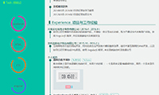
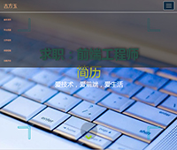

HTML
-
- Basic info. 基本信息
- 个人信息: 吉方玉 / 女 / 四川.自贡 / 25岁
- 教育经历: 本科 / 河南财经政法大学/计算机科学与技术
-
- Study. 学习经历
河南财经政法大学（2012.9 - 2016.7）
-
获奖经历
2016年获得校二等奖学金、优秀学生干部，优秀毕业生称号
2015年获得校二等奖学金、三好学生、国家励志奖学金
2013，2014年均获得校一等奖学金、三好学生称号
-
在校期间职务
2014年9月-2016年7月担任班级学习委员
2012年9月-2014年7月担任班级团支书
- Skill. 技能清单
Web前端
-
HTML/CSS
精通html5 + css3的新功能，具有WEB 前端开发经验, 掌握HTML,CSS,HTML5,CSS3等技术；
掌握Bootstrap、layui、B-JUI等前端框架
了解 Less / Sass 等CSS预处理和后处理方法、工具
对用户体验、交互操作流程及用户需求有深入理解、精通 DIV+CSS 网页布局，符合 W3C 标准
-
JavaScript
掌握JavaScript/jQuery/DOM/Ajax/JSON
深入了解Vue渐进式框架和Angularjs
会简单使用Nodejs
-
其他
熟悉 Echarts, Highcharts, D3js, G2等数据图表工具
熟悉dataTables表格插件、熟悉ES6语法
熟练使用Jade模板引擎
有美工基础，会简单使用photoshop
后端
-
环境
了解 Linux 开发环境、 Linux 服务器环境的搭建部署
-
语言
熟悉 Java，能进行简单的网络编程和多线程编程
熟悉jsp，能用jsp连接数据库实现用户和管理员的增加，删除，修改等
数据库
-
会使用SQL Server,oracle,mysql等数据库等
- Experience. 工作经验与作品
成都安舟信息技术有限公司（2017.03 - 至今）
-
1、负责公司已有产品和新产品的前端开发工作，提供合理的前端架构；
2、与UI设计及后台开发人员协作，高效优质完成产品界面和功能的实现；
3、负责前端功能优化,对页面开发功能完成自测及调试Bug修复等；
4. 设计用户交互模式持续优化WEB前端页面展现，提高产品界面易用性和交互体验；
5、负责熟悉并针对主流浏览器的代码兼容优化；
亚丁胡杨科技股份有限公司（2015.10 - 2017.2）
-
1、根据工作安排高效、高质地完成代码编写，确保符合规范的前端代码规范；
2、负责公司现有项目和新项目的前端修改调试和开发工作；
3、与设计团队紧密配合，能够实现实现设计师的设计想法；
4、与后端开发团队紧密配合，确保代码有效对接，优化网站前端性能；
5、页面通过标准校验，兼容各主流浏览器。
项目经验
-
基础数据处理平台V3.0
项目时间:2017年11月至2018年3月
责任描述:项目组成员 根据项目经理安排，根据UI设计的界面，编写前端代码，高度还原效果图,配合后台工作人员用ajax与服务端完成交互。完成项目后进行自测和提交测试部,修改项目bug,并进行维护。
项目描述:该项目在基础数据处理平台V2.0的基础上界面风格焕然一新，框架重新设计了。前端所有代码全部重写，综合应用了HTML、CSS、HTML5、CSS3、JavaScript、jade模板、layui框架、jQuery、dataTables、echarts、G2等前端技术。
-
基础数据处理平台V2.0
项目时间:2017年4月至2017年9月
责任描述:项目组成员 根据项目经理安排，根据项目负责人用Axure设计的原型， 编写前端代码，自己在原型的基础上自己做配色，样式等调整，配合后台工作人员 用ajax与服务端完成交互。完成项目后提交测试，修改项目提出的bug，并进行维护。
项目描述:该项目在基础数据处理平台V1.0的基础上通过深度分析网络数据包，从远程漏洞， 协议异常等行为特征发现远程漏洞攻击行为。综合应用了HTML、CSS、HTML5、CSS3、JavaScript、jade模板、jQuery、dataTables、echarts、D3js等前端技术。
-
皇城坝商城(pc端和移动端)
项目时间:2016年12月至2017年2月
责任描述:项目组成员 根据项目经理安排，根据UI设计的界面编写网页,配合后台工作人员完成产品页面的代码编程及脚本编码。
项目描述:该项目综合应用了Java+Servlet+JSP+JavaBean后台技术,以及HTML、CSS、HTML5、CSS3、JavaScript、jQuery等前端技术。实现了用户可以在系统中进行注册、登录、浏览s搜索商品、下单、查询订单状态，对商品进行评价等操作。
-
喔喔娱乐平台
项目时间:2016年7月至2016年11月
责任描述:项目组成员 根据项目经理安排，根据UI设计的界面编写网页， 配合后台工作人员完成产品页面的代码编程及脚本编码。
项目描述:项目是一个直播平台，借鉴MVC设计模式。综合应用了Java+Servlet+JSP +JavaBean技术，以及HTML,CSS,HTML5,CSS3,JavaScript,jQuery等前端技术。由JavaBean 负责具体的业务数据和业务逻辑，设计数据库时采用MySQL数据库，服务器采用的Tomcat7.x。实现了用户 可以在平台进行注册成为会员 ，会员之间互加好友,并可以相互发送消息； 会员还可以查看自己的会员卡账户，可以充值，查询，积分兑换，个人订阅，观看记录，发表动态，上传照片和发布视频等。
-
听书系统的设计与实现
项目时间:2016年4月至2016年6月
责任描述:根据指导老师安排，查阅相关资料，利用myEclipse，构建整个系统架构。
项目描述:系统运用了JSP+SERVLET+JAVABEAN+DAO的设计模式，MVC设计理念，通过JAVA和JSP技术实现里简单的登录系统。其中分为管理员模块和会员模块，管理员模块主要实现会员的管理,文章的上传下载，评论的管理。通过JSP和MYSQL会员模块主要实现的功能有会员的注册、登录、会员信息的修改，通过JS实现文章的暂停、播放、显示文字、前进、后退等功能。
个人作品
-
个人静态简历 Demo
设计优雅、内容完善的静态简历页面，可以用浏览器直接生成合适尺寸的PDF，支持PDF格式下载简历。
 -
个人酷炫简历 Demo
用Bootstrap+JavaScript+css做的一个酷炫简历
 -
保罗皮具 Demo
用css+html+jQuery实现的一个简单的箱包商城

-
jquery电子翻书 Demo
jQuery图片制作的幻灯片电子相册，jQuery带有翻页效果的图片电子书， 支持收藏，翻页功能的电子相册。

-
四川旅游 Demo
用Bootstrap+JavaScript+css做的一个界面清晰的响应式布局 ，可用于移动端的页面。

-
编发馆 Demo
用css+html+jQuery实现的一个简单的编发馆

-
lawfirm Demo
用html+css仿做的一个英文的律师事务所

自我评价
-
有责任，工作踏实，性格开朗乐观，积极上进。
易和人相处，拥有良好的亲和力。
喜欢js，热爱编程，喜欢钻研新的技术，
具有很强的自学能力和良好的学习方法， 喜欢研究各种新的框架。